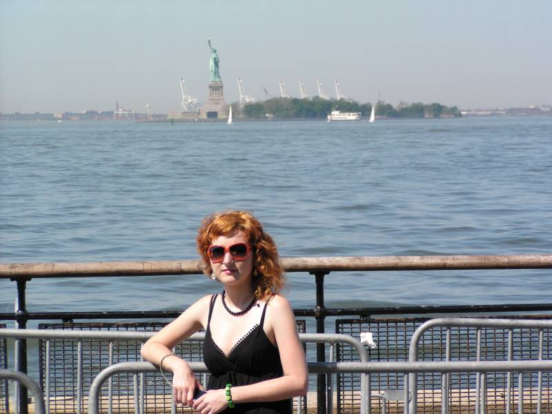
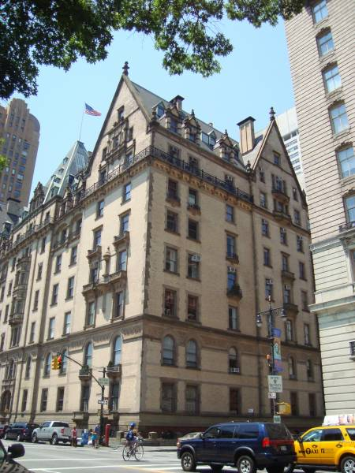
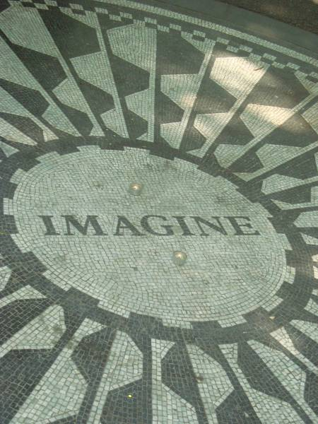
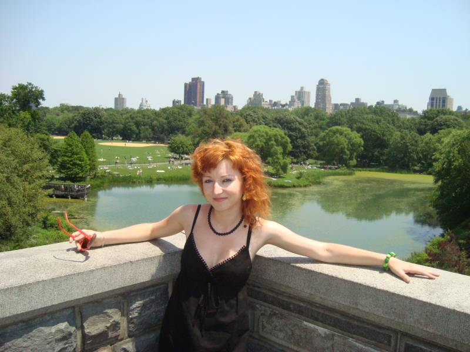

Tak jdu zas potěšit všechny ty, kteří nedočkavě čekají na report z návštěvy americké metropole :-)…ráno nemůžu vůbec dospat, jak se strašně těším, až se zas vydáme do ulic špinavého New Yorku :D. Brašule zpod peřiny bručí, že jsem se v noci moc roztahovala :D - máme totiž na pokoji jen dvě manželské postele a kdovíjak prostorné nejsou - no ale aspoň jsem poprvé a naposled za naši dovolenou měla pod hlavou při spaní něco lepšího, než složený ručník, že 8-). Za sebe musím říct, že jsem se vyspala fakt dobře a jsem plná elánu k objevování dalších newyorských zákoutí :-)…
Jako první tedy vyrazíme na Sochu svobody. Vylezeme z metra a brašule už nám ji ukazuje mezi stromy. Málem bych ji přehlídla :D, zdá se totiž opravdu docela maličká. Myslela jsem, že je mnohem blíž pobřeží. Když příjdeme až na břeh moře, jdeme se s ní hned vyfotit, ale nevím nevím, jestli bude můj zoom stačit a slavná Statue of Liberty nebude na fotkách vypadat jako blecha :D. Naši se sklátí na lavičku do stínu (dneska opět 32 stupňů Celsia :O!) a my se jdeme s bráchou projít po nábřeží - Luk mi ukazuje, kde už začíná New Jersey. O tom jsem si zase myslela, že leží mnohem dál, ale vlastně je to kousek :-)…

Svobodaaa !!!
Když se dostatečně pokocháme mořem, vydáme se na asi půlhodinovou cestu metrem přímo do srdce Central Parku. Hledám si na mapě, jak se odsud nejlíp dostat k Dakotě - tak trochu totiž počítám s tím, že ji půjdu hledat sama, neboť nikdo z rodiny asi mé nadšení pro věc sdílet nebude. Překvapí ale brašule, který se ke mně přidá, a jsem za to moc ráda - bez něj bych se z Central Parku nikdy nevymotala. Dokonce jeho znalosti sahají až tam, že před Dakotou zastřelili Johna Lennona (podezírám ho, že si tuto informaci přečetl na tabuli v parku, zatímco jsem fotila 8-)…). Podaří se nám krosnout Central Park z východní strany na západní - to trvá suma sumárum zhruba 15 minut, Lužánky hadr, no :D - pak nás čeká asi další 15ti minutová štreka, než se dostaneme k té správné západní street…a to už spatřím špičatou budovu, kterou jsem dodneška znala jen z fotek, na vlastní oči…

Dakota House
Stojíme před Dakotou. Před velikou černou bránou, kde byla zastřelena jedna z největších hudebních ikon všech dob. Není to zrovna ta nejzásadnější turistická atrakce New Yorku, ale pro mě má Dakota mezi všemi památkami, které jsme tu navštívili, naprosto výjimečné místo…Brácha přemýšlí, jak bysme se vlomili dovnitř :D, ale usuzuju, že to asi nepůjde. Tak mě před branou alespoň vyfotí a pak ještě přeběhne na druhou stranu ulice, že mě vezme s celým domem. Jeho snažení se musím upřímně smát, protože fotku děláme asi na deset pokusů - jednou mu zrovna při mačkání spouště přes cestu přejede taxík, pak prozměnu po mém chodníku cyklista, za ním maminka s kočárkem :D…Nakonec se s tím nějak popere a Dakotu máme zvěčněnou. Je to mimořádný zážitek…
Na ceduli v Central Parku jsem se při cestě k Dakotě dočetla, že tu někde poblíž nechali Lennonovi rok po jeho smrti vybudovat pomník. Když už jsme došli až sem, samozřejmě ho chci vidět na vlastní oči. Památné místo je pojmenováno stylově podle jedné z nejslavnějších Johnových písniček - totiž Strawberry Fields. Směrovou ceduli spatřím záhy a to už se před námi vyloupne maličké prostranství s kruhovým pomníkem. Je vytvořený jako taková dlažba přímo na zemi s nápisem Imagine uprostřed a s dvěma zapálenými svíčkami. Trochu bezbožně si říkám: “A to je všechno ?” Když ale jeden z přítomných návštěvníků začne vybrnkávat na kytaru melodii Imagine, pochopím, že kouzlo Jahodových polí spočívá v něčem docela jiném…pomník nemá kruhový tvar jen tak náhodou. Jestli americké filmy nelžou (a po deseti dnech pobytu tady si začínám říkat, že asi opravdu NE :D…), tak se tady lidé většinou v rodinném kruhu modlí. A sem, na toto místo, přichází fanoušci z celého světa, aby vzdali společně hold jednomu z nejlepších muzikantů všech dob. Fanoušci, které spojuje krom stejného hudebního vkusu taky spojení tohoto kruhového pomníku. Je mi tak líto, že tu nestojím s někým uvědomělejším, než je Luk (nic ve zlém samozřejmě :D !), a myslím na holky, s kterýma jsem prožila roky beatlemánie a dalších společných hudebních šílenství :-)…

Imagine…
Na zpáteční cestě po Central Parku se mi moc nechce mluvit. Tenhle zážitek už asi nic jen tak nepřekoná…Proplétáme se s Lukem krásnými rozkvetlými zákoutími a já dokumentuju a dokumentuju :-). Hledám místa, která jsou alespoň trochu podobná těm, kde se proháněl na koni fešák Berger při natáčení Vlasů (ach :) !!!). Central Park je ale opravdu veliký, a tak není divu, že v něm brzo zabloudíme :D - jako na zavolanou se ale před námi vyloupne vyhlídka, takže na ni s bráchou vylezeme a čekáme, kde spatříme světýlko - totiž hřiště na baseball, náš záchytný bod, kde jsme zanechali staříky :D. Zjišťujeme, že už jsme blízko, ale já sotva popadám dech, takže si na vyhlídce uděláme pár fotek modelkovského ražení :D. Pózujeme s brašulou u zábradlí, za námi zeleň Central Parku, v pozadí mrakodrapy New Yorku, na nebi azúro - no nádhera :D !

Central Park
Poté, co se šťastně shledáme s rodiči, brašule se od nás odtrhuje a jako příznivce současného umění se vytratí kamsi do muzea. My pomalu pokračujeme pěšky po Madison street až k místu, kde nás má večer naložit náš bus. Poté, co mineme řadu luxusních obchodů, dostaneme se k finančně příznivější tržnici s drobnými kýči a ano, neodolám - tričko s Lennonem zkrátka musím mít :D…Po obligátní zastávce ve Starbucks se vydáme opět na cestu a k Madison Square Garden, odkud odjíždí náš autobus a kde máme sraz s Lukem, dojdeme celkem s předstihem /jak se záhy ukáže, naprosto zbytečným/, ale už jsme z toho celodenního cárání dost utahaní, takže mám energii jen na obíhání slavné arény a focení krotkých vrabců na chodníku :D…Autobus má skoro hodinové zpoždění, se zaměstnanci dopravního podniku není řeč, na “zastávce” to navíc strašně smrdí, takže poslední dojmy z NY nejsou zrovna růžové :D…
Nicméně zážitků máme i tak na kontě víc než dost a když už sedím konečně v buse se sluchátkama na uších a cpu se spokojeně sendvičem, co mi brácha koupil na cestu, říkám si, že ten výlet stál zato. New York je sice špinavé a zaplivané město a dva dny v něm mi bohatě stačily, na druhou stranu jsem ale navštívila spoustu míst, která stála za vidění a na která budu dlouho vzpomínat. Navzdory zpoždění, které nabereme v NY, dorazíme do Bostonu na čas - no, aspoň něco tady funguje tak jak má :D…
Zamačkávám slzičku a posílám písničku :)
http://www.youtube.com/watch?v=6GAHFrLAxzM